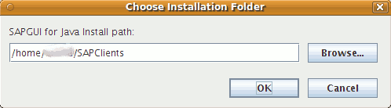
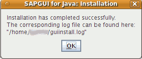
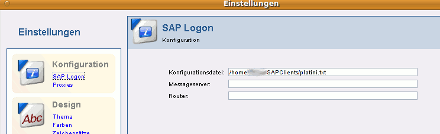
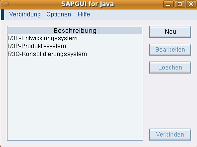

SAP GUI
Archivierte Anleitung
Dieser Artikel wurde archiviert, da er - oder Teile daraus - nur noch unter einer älteren Ubuntu-Version nutzbar ist. Diese Anleitung wird vom Wiki-Team weder auf Richtigkeit überprüft noch anderweitig gepflegt. Zusätzlich wurde der Artikel für weitere Änderungen gesperrt.
Hinweis:
Zum Herunterladen (Download) ist eine vorherige Registrierung  beim SAP Service Marketplace erforderlich. Bei dieser wird zwingend eine Kunden- oder Installationsnummer des vorhandenen SAP-Systems verlangt.
beim SAP Service Marketplace erforderlich. Bei dieser wird zwingend eine Kunden- oder Installationsnummer des vorhandenen SAP-Systems verlangt.
Zum Verständnis dieses Artikels sind folgende Seiten hilfreich:
SAP_GUI (SAP Graphical User Interface) ist ein Sammelbegriff für den entfernten grafischen Zugriff auf SAP-Systeme. Die Fa. SAP stellt verschiedene Clients bzw. GUIs bereit, allerdings ist nur das Programm "SAP GUI for Java" für Unix/Linux geeignet. Generell ist "SAP GUI for Java" für die Betriebssysteme Linux, Mac OS X, Windows, Solaris, AIX, und HP-UX freigegeben.
Das Programm basiert - wie der Name schon sagt - auf Java. Wichtig ist hierbei, dass SUN Java vorausgesetzt wird, da mit dem unter Ubuntu vorinstallierten OpenJDK nicht alle Funktionen verfügbar sind. Außerdem wird "SAP GUI for Java" von SAP nur beim Betrieb unter SUN Java offiziell unterstützt.
Voraussetzungen¶
Die Installation von Sun Java ist im Artikel Java/Installation beschrieben. Es kann Java 5 oder auch Java 6 installiert werden, SAP empfiehlt Java 6. Zu beachten ist jedoch, dass es bei der Verwendung von Desktop-Effekten zu Problemen bei der Installation kommen kann (unter Java 6 kann dies umgangen werden). Details hierzu findet man unter Java Desktop-Effekte. Verwendet man noch Java 5, kann die Installation nicht grafisch durchgeführt werden.
Download¶
Hinweis!
Fremdsoftware kann das System gefährden.
Zuerst muss die Installationsdatei von folgender Downloadseite  heruntergeladen werden (ab 2010 ist eine vorherige Registrierung zwingend erforderlich). Bitte beachten, dass dort unterschiedliche Version vorliegen, ebenso liegen hier die Dateien für andere Betriebssysteme. Zum Zeitpunkt der Erstellung dieses Artikels war die Version 710 R9 die aktuelle "SAP GUI for Java" Version. Der Name der Installationsdatei lautet dann PlatinGUI-Linux-710r9.jar. Bei anderen Versionen die entsprechende Datei herunterladen. Die heruntergeladene Datei sollte im Homeverzeichnis gespeichert werden.
heruntergeladen werden (ab 2010 ist eine vorherige Registrierung zwingend erforderlich). Bitte beachten, dass dort unterschiedliche Version vorliegen, ebenso liegen hier die Dateien für andere Betriebssysteme. Zum Zeitpunkt der Erstellung dieses Artikels war die Version 710 R9 die aktuelle "SAP GUI for Java" Version. Der Name der Installationsdatei lautet dann PlatinGUI-Linux-710r9.jar. Bei anderen Versionen die entsprechende Datei herunterladen. Die heruntergeladene Datei sollte im Homeverzeichnis gespeichert werden.
Hinweis:
Die Anweisungen aus diesem Artikel sind für die "SAP GUI for Java" Versionen 7.10 bis 7.20 getestet.
Wer Zugriff auf die SAP-Installations-CD/DVDs hat: "SAP GUI for Java" befindet sich auf der "Presentation CD 2".
Installation¶
Installation unter Java 6¶
Zuerst wechselt man im Terminal [2] ins Homeverzeichnis. Dort wird folgender Befehl eingegeben:
java -jar PlatinGUI-Linux-710r9.jar
Danach öffnet sich ein grafischer Installationsassistent, der durch die SAP GUI-Installation führt.
Alternative Methode im Nautilus-Dateibrowser:  rechter Mausklick auf die Datei PlatinGUI-Linux-710r9.jar und "Mit Sun Java 6 Runtime öffnen" ausführen. Daraufhin wird der Installationsassistent geöffnet.
rechter Mausklick auf die Datei PlatinGUI-Linux-710r9.jar und "Mit Sun Java 6 Runtime öffnen" ausführen. Daraufhin wird der Installationsassistent geöffnet.
grafische Installation¶
Als ersten Schritt bei der Installation wird man nach dem Installationspfad gefragt:

Nach Drücken des "OK"-Buttons wird die Installation vollautomatisch durchgeführt. Zum Abschluss der Installation erscheint folgende Meldung:

Installation unter Java 5¶
Wird Java 5 verwendet, kann der grafische Installationsassistent nicht benutzt werden, da die Steuerelemente nicht angezeigt werden. Dies kann durch das Erstellen einer Konfigurationsdatei für die Installation umgangen werden. Hierzu ist es notwendig, die Datei sapgui.conf im gleichen Verzeichnis wie die SAP GUI-Installationsdatei zu erstellen [3]. Folgender Inhalt muss mind. in die Datei eingetragen werden:
installpath=INSTALLATIONSPFAD disableui=true
"INSTALLATIONSPFAD" muss natürlich durch den korrekten Ort, an dem der SAP installiert werden soll, ersetzt werden.
Danach im Terminal folgenden Befehl ausführen:
java -jar PlatinGUI-Linux-710r9.jar -i sapgui.conf
Die Installation erfolgt nun rein textbasiert.
Optionen bei der textbasierten Installation¶
| Option | Bedeutung |
| -installdir <path> | Festlegung des Installationspfades, der Standardpfad wird nicht genutzt |
| -disableui | Deaktiviert das graphische Installationsprogramm. Alle Installationsparameter müssen im Installations-Skript mitgegeben werden. Alle Meldungen, welche bei der Installation erzeugt werden, werden in die Standard-Ausgabedateien geschrieben |
| -automatic | Automatische Installation, der Installationsfortschritt und die Fehlermeldungen werden angezeigt |
| -silent | Es werden keine Meldungen in die Standard-Ausgabedateien geschrieben, Fehlermeldungen werden alle in die Logdatei geschrieben |
| -reinstall | Nochmalige Installation des SAP GUI |
| -noshortcuts | Es werden keine Shortcuts auf dem Desktop angelegt (um den SAP GUI zu starten) |
| -t tracekey1:tracekey2 | Falls es bei der Installation zu Problemen kommt, kann mit dieser Option die beiden Tracekeys eingeschaltet werden. Die Traces werden in die Standardfehlerdatei geschrieben |
| -l logfile.trc | Mit dieser Option kann eine Kopie der Standard-Logdatei erzeugt werden |
| -i responsefile.txt | Mit dieser Option kann eine Parameterdatei mit den Installations-Parametern zur Installation genutzt werden |
Beispiel für eine Parameterdatei:
# Example of a typical installation response file # suppress user interaction disableui=true # install to the default path installidir=default # reinstall gui if already present reinstall=true
Programmstart¶
Die Software kann dann über den Menüpunkt "Anwendungen -> Sonstige -> SAPGUI 7.10" gestartet werden. Alternative Methode: die Datei GUILogOn ausführen (Script-Datei, die bei der Installation erstellt wurde). Außerdem kann man "SAP GUI for Java", falls mit der Option "mit Shortcut" installiert wurde (dies ist die Standardoption), auch über das Desktop-Symbol starten.
Nun erscheint ein Begrüßungsfenster (Splash-Screen) und danach die gewohnte SAP GUI-Oberfläche. Nun müssen nur noch die Verbindungsdaten zu den einzelnen SAP-Systemen konfiguriert werden.
Konfiguration¶
Die Konfiguration erfolgt in zwei Schritten:
1. Einstellen der Konfigurationsdatei im SAP GUI:
Starten der SAP GUI, dann "Optionen -> Einstellungen -> Konfiguration" auswählen

Die Konfigurationsdatei heißt hier im Beispiel platini.txt. Sie kann generell auch anders heißen, wichtig ist nur die Kennung .txt.
2. Verbindungsdaten in der Konfigurationsdatei hinterlegen (Beispiele):
R3P-Produktivsystem : /H/10.101.111.100/S/3210 R3Q-Konsolidierungssystem : /H/10.101.111.101/S/3210 R3E-Entwicklungssystem : /H/10.101.111.102/S/3210
Die obigen drei Einträge sind als Beispiele anzusehen, die Datei muss jedoch mindestens einen Eintrag haben. Die Parameter der Konfigurationsdatei haben folgende Bedeutung (als Beispiel soll hier die Zeile R3P-Produktivsystem : /H/10.101.111.100/S/3210 dienen):
| Parameter | Bedeutung |
R3P-Produktivsystem : | die Bezeichnung des SAP Systemes |
/H/ | steht für "Host" bzw. einen SAP-Server |
10.101.111.100 | ist die IP-Adresse des SAP-Servers (hier kann auch der Server für die Lastverteilung eingetragen werden) |
/S/ | steht für Service |
3210 | ist der Port |
Nun kann mit SAP GUI eine Verbindung mit einem SAP System aufgebaut werden.

Konfiguration aus Windows übernehmen¶
Unter diesem Blogeintrag ist das Tool SapGuiIniToSapcConverter und dessen Beschreibung zu finden, welches saplogon.ini-Dateien in Konfigurationsdateien für "SAP GUI for Java" umwandelt.
- Erstellt mit Inyoka
-
 2004 – 2017 ubuntuusers.de • Einige Rechte vorbehalten
2004 – 2017 ubuntuusers.de • Einige Rechte vorbehalten
Lizenz • Kontakt • Datenschutz • Impressum • Serverstatus -
Serverhousing gespendet von